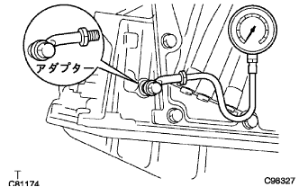

電子制御式オートマチツクトランスアクスル［ECT］システム（U340F） 機能点検 |
| 1. タイムラグ点検 |
パーキングブレーキを作用させ、輪止めをする。
エンジンを始動する。
ブレーキペダルを踏みながら、アイドル回転でNレンジからDレンジまたはRレンジにシフトし、軽いショックがあるまでの時間を測定する。
| 2. ストール回転数点検 |
パーキングブレーキを作用させ、輪止めをする。
エンジン回転計を取り付け、エンジンを始動する。
左足でブレーキペダルを強く踏み、Dレンジにシフトし、右足でアクセルペダルをいっぱいに踏み込んだ時の最高エンジン回転数をすばやく読み取る。
| 3. ラインプレッシャー点検 |
パーキングブレーキを作用させ、輪止めをする。
エンジン回転計を取り付ける。
|  |
テストプラグをはずし、ゲージを取り付け、ブレーキペダルを踏み、エンジンを始動する。
| バンザイ製 | オートマチックトランスミッションオイルプレッシャゲージセット[OPG-210] ゲージASSY[OPG-GAUGE] アダプターC[OPG-142] |
| イヤサカ製 | オートマチックトランスミッションオイルプレッシャゲージセット[ATG-100] ゲージASSY[ATG-GAUGE] アダプターC[ATG-113] |
左足でブレーキペダルを強く踏み、DレンジまたはRレンジにシフトし、アイドル回転時およびストール回転時における油圧を点検する。
| シフト位置 | アイドル時 [MPa{kgf/cm2} ] | ストール時 [MPa{kgf/cm2} ] |
|---|---|---|
| Dレンジ | 0.37-0.41 {3.8-4.1} | 1.11-1.23 {11.3-12.5} |
| Rレンジ | 0.54-0.64 {5.5-6.5} | 1.70-1.81 {17.3-18.5} |
| 4. 変速表 |
| スロットルバルブ開度 | 100% | 100% | 100% | 0% | 0% | 100% | 100% | 100% |
|---|---|---|---|---|---|---|---|---|
| 変速点 | 1→2 | 2→3 | 3→4 | 3→4 | 4→3 | 4→3 | 3→2 | 2→1 |
| Dレンジ [km/h] | 50-56 | 94-103 | 149-157 | 35-39 | 30-34 | 143-152 | 89-97 | 40-45 |
| 2レンジ [km/h] | 50-56 | - | - | - | - | - | 89-97 | 40-45 |
| Lレンジ [km/h] | - | - | - | - | - | - | 89-97 | 44-49 |
| スロットルバルブ開度 | 5% | 5% | 5% | 5% |
|---|---|---|---|---|
| ギヤ位置 | 3→3L | 4→4L | 4L→4 | 3L→3 |
| Dレンジ [km/h] | 84-92 | 68-73 | 65-70 | 81-89 |
| スロットルバルブ開度 | 5% | 5% | 5% | 5% | 5% | 5% |
|---|---|---|---|---|---|---|
| ギヤ位置 | 2→2L | 3→3L | 4→4L | 4L→4 | 3L→3 | 2L→2 |
| Dレンジ [km/h] | 19-24 | 31-35 | 48-52 | 46-51 | 29-33 | 18-22 |
| 5. 走行テスト |
| 点検項目 | 点検および確認要領 |
|---|---|
| Dレンジ変速機能 | 通常走行(一般的な市内走行)にて1速→2速→3速→4速と変速することを点検する。 |
| Dレンジ走行時の変速ショックレベル | 通常走行において、各アップシフト時のショックレベルを点検する。 |
| シフトロックコントロールコンピュータの作動(D←→3レンジ切り替えスイッチの作動) | 4速速度域で、シフトレバーをDレンジ←→3レンジと操作し、4速←→3速と変速することを点検する。 |
| キックダウン機能 |
|
| エンジンブレーキの作用 |
|
| アクセルペダル全開時の変速点 | Dレンジでアクセルペダル全開で発進し、1速→2速へのアップシフト速度が変速点に適合していることを点検する。 |
| ロックアップ機能 | 平坦路をロックアップ速度域で定速走行中、アクセルペダルを軽く踏み込んだときエンジン回転数が大きく変化しないことを確認する。 |
| Pレンジの作動 | 車両を坂路(約5°以上)に停止させPレンジにシフトして、パーキングブレーキを解除したとき、車両が動かないことを点検する。 |
| 異音、振動 | 走行時および変速時の異音、振動を点検する。 |
| 登降坂制御機能 |
|
| 油漏れ | 走行テスト後、各部を点検し、油漏れのないことを点検する。 |
| 6. マニュアル走行テスト |
トランスミッションワイヤのコネクターを切り離す。
走行中にそれぞれのレンジに合ったギヤに変速されているか点検する。
| シフトレバー位置 | ポジション |
|---|---|
| Ｄレンジ | 3速 |
| 3レンジ | 3速 |
| 2レンジ | 3速 |
| Lレンジ | 3速 |